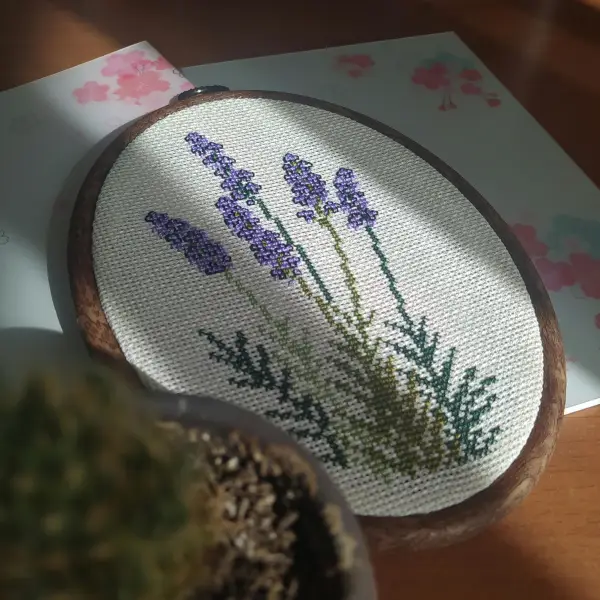

Meet the Experts

I have been working with Resin for a few years. I started when I wanted to make a set of dice and it has expanded. Latelly my favorite thing to make is pieces with flower inclusions. My favorite thing about resin is that I never quite know how it is going to end up. It is always a surprise when I demold the art.
Hey there! I have been working in digital art for the last 5 years. I have been able to turn my passion into a career. I have also tutored through college and sharing my skills is one of my favorite things to do. I specialize in tools like photoshop and Procreate and I have worked on everything from game assets and brand identities.
Hi! I am Jennifer and I have always been interested in watercolors. I am far from a professional artist, but I love watching the colors mix and settle. Manipulating the water and pigments have always been so amazing to me. I am happy to have new members join and I love to share the talents that I have. My proudest accomplishment has got to be when I was able to get a piece of my art in a show in Ogden. Spending time painting with a group has allowed me to love painting while still also doing commisions.
Want to become an expert?
Pick up an application from one of the current experts whlie at a club activity. We love to have all kinds of crafts represented here. If you have a talent that you would like to share then please join! If you are brought in as an expert you can expect to help people as the opportunity arises. New members will most likely be interested in at least a brief explanation of your skill.